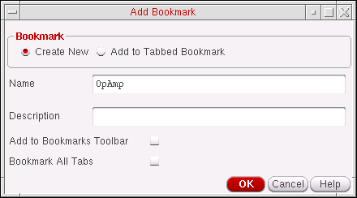

Bookmarking Designs
To add the Bookmarks toolbar to your current session window:
- Right-click in the toolbar area of the session window and click to mark the Bookmarks item on the pop-up menu.
-
Choose Window – Toolbars – Bookmarks.
The program adds the Bookmarks toolbar to your current session window.
To add a bookmark for the current design or a collection of open designs:
-
In the session window, choose File – Bookmarks – Add Bookmark.
The Add Bookmark form appears.
The name of the current design cellview appears in the Name field. You can also right-click over any existing session window tab, and select Add Bookmark to display the Add Bookmark form. - Select the Create New bookmark option.
- (Optional) In the Name field, type a different name for your bookmark.
-
(Optional) In the Description field, type a description for your bookmark.
This text appears in the Description column of the Bookmarks Manager window. -
(Optional) If you want your bookmark to also appear on the Bookmarks toolbar, check the Add to Bookmarks Toolbar check box.
There is no limit to the number of bookmarks you can add to the Bookmarks toolbar. However, when the Bookmarks toolbar area is full, a “>>” pull-down appears on the right side of the toolbar so that you can select additional bookmarks that do not appear because of space restrictions. -
(Optional) If you want to add a composite bookmark for all the tabs in your session window, check the Bookmark All Tabs check box.
A composite bookmark lists all the views that it comprises of. You can choose to open one bookmark or all of them.
- Click OK
The bookmark gets created and optionally added to the Bookmarks toolbar. Otherwise, the bookmark gets available from the bottom of the File - Bookmarks menu options in both the CIW and the current session window, and also from the Bookmarks Manager form.
Related Topics
Adding Assistant Panes and Toolbars to a Workspace
Adding Bookmarks to Existing Composite Bookmarks
Return to top